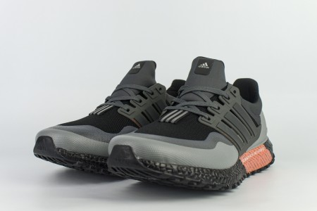

Таблица размеров
40 | 41 | 42 | 43 | 44
Adidas Ultraboost All Terrain (Вездеходы) - это кроссовки для повседневной носки, а также для трейлинга. Предназначены для тех, кто любит быстро переходить с
внедорожных дорожек на дороги практически без беспокойства.
Покупатели хвалят общий дизайн и качество сборки этого продукта, а некоторые подчеркивают легкость материалов и жесткость посадки. Благодаря усиленной
амортизации бегуны могут рассчитывать на баланс комфорта и производительности.
Верх из прочных синтетических материалов, подошва Continental
Сезон: демисезон